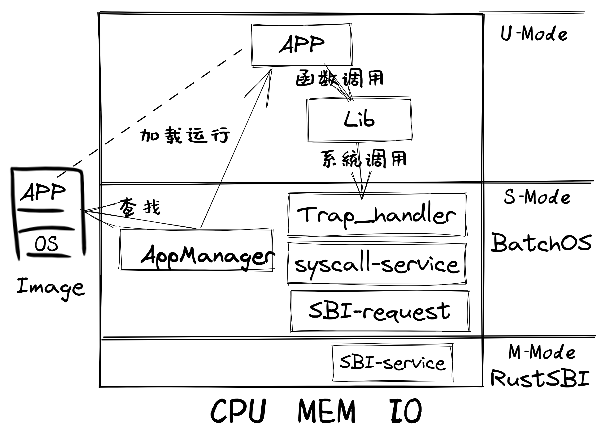

引言#
本章导读#
保障系统安全和多应用支持是操作系统的两个核心目标，本章从这两个目标出发，思考如何设计应用程序，并进一步展现了操作系统的一系列新功能：
构造包含操作系统内核和多个应用程序的单一执行程序
通过批处理支持多个程序的自动加载和运行
操作系统利用硬件特权级机制，实现对操作系统自身的保护
实现特权级的穿越
支持跨特权级的系统调用功能
上一章，我们在 RISC-V 64 裸机平台上成功运行起来了 Hello, world! 。看起来这个过程非常顺利，只需要一条命令就能全部完成。但实际上，在那个计算机刚刚诞生的年代，很多事情并不像我们想象的那么简单。 当时，程序被记录在打孔的卡片上，使用汇编语言甚至机器语言来编写。而稀缺且昂贵的计算机由专业的管理员负责操作，就和我们在上一章所做的事情一样，他们手动将卡片输入计算机，等待程序运行结束或者终止程序的运行。最后，他们从计算机的输出端——也就是打印机中取出程序的输出并交给正在休息室等待的程序提交者。
实际上，这样做是一种对于珍贵的计算资源的浪费。因为当时（二十世纪 60 年代）的大型计算机和今天的个人计算机不同，它的体积极其庞大，能够占满一整个空调房间，像巨大的史前生物。当时用户（程序员）将程序输入到穿孔卡片上。用户将一批这些编程的卡片交给系统操作员，然后系统操作员将它们输入计算机。系统管理员在房间的各个地方跑来跑去、或是等待打印机的输出的这些时间段，计算机都并没有在工作。于是，人们希望计算机能够不间断的工作且专注于计算任务本身。
批处理系统 (Batch System) 应运而生，它可用来管理无需或仅需少量用户交互即可运行的程序，在资源允许的情况下它可以自动安排程序的执行，这被称为“批处理作业”，这个名词源自二十世纪60年代的大型机时代。批处理系统的核心思想是：将多个程序打包到一起输入计算机。而当一个程序运行结束后，计算机会 自动 加载下一个程序到内存并开始执行。当软件有了代替操作员的管理和操作能力后，便开始形成真正意义上的操作系统了。
注解
来自汽车生产线灵感的 GM-NAA I/O System 批处理操作系统
操作系统历史上最伟大的想象力飞跃之一是计算机可能通过软件来安排自己的工作负荷的想法，这体现在早期的批处理操作系统的设计与实现中。
在 2006 年计算机历史博物馆对 Robert L. Patrick 的一次采访中，Patrick 回顾了在 1954-1956 年前后他在通用汽车（ General Motors，简称 GM）公司设计实现的 GM-NAA I/O 操作系统的有趣开发历史。当时（1954 年），通用汽车公司购置的 IBM 701 大型计算机使用效率极低，大约 2/3 的时间处于浪费的闲置状态，而浪费的计算机时间的成本是每月近 15 万美元，这给公司带来了巨大的经济开销。计算机的用途是程序开发和执行，而开发程序、编译程序、测试程序、运行程序、操作计算机运行等事务大多都由程序员来完成，编写好的程序源码会被程序员手工按顺序放到磁带（磁带只能串行顺序读写代码和数据）上，再串行加载到计算机上被编译器编译成可执行程序，再加载可执行程序运行，最后打印输出执行结果。当时的程序多是机器码程序或汇编程序等，也有处于试验阶段的早期 FORTRAN 语言编写的程序，很容易出错。如果当前正在执行的程序测试运行崩溃或提前终止，其他程序只能等待，整个机器就会闲置。程序员的大量时间是等待机器能运行到他提交的程序。
Patrick 采用了提高并行处理流程的汽车生产线设计中的一些分析技术来设计面向下一代 704 计算机的操作系统（当时的名字还是 Monitor，监控器），而这些想法起源于 Henry Laurence Gantt，他在 1910 年发明了甘特图，这是一种条状图，可显示项目、进度以及其他与时间相关的系统进展的内在关系随着时间进展的情况。然后 Patrick 和来自北美航空公司的 Owen Mock 合作，带领开发团队一起设计了 GM-NAA I/O System（General Motors - North America Aviation Input-Output System）操作系统。
GM-NAA I/O System 操作系统完成对计算机的管理与控制，形成了标准化的输入和输出程序以及作业控制语言。以前由程序员承担的计算机操作工作，如把程序导入磁带，加载程序，转储程序出错信息并继续执行下一程序等各种任务，现在都由操作系统来按相互依赖关系分阶段进行编排，并自动完成。在原有硬件和程序员工资的情况下，计算机的使用效率提高了 5 倍以上，程序员没有那么多空闲的时间用来聊天了。
应用程序总是难免会出现错误，如果一个程序的执行错误导致其它程序或者整个计算机系统都无法运行就太糟糕了。人们希望一个应用程序的错误不要影响到其它应用程序、操作系统和整个计算机系统。这就需要操作系统能够终止出错的应用程序，转而运行下一个应用程序。这种 保护 计算机系统不受有意或无意出错的程序破坏的机制被称为 特权级 (Privilege) 机制，它让应用程序运行在用户态，而操作系统运行在内核态，且实现用户态和内核态的隔离，这需要计算机软件和硬件的共同努力。
注解
想法超前且用力过猛的 MULTICS 操作系统
1961-1963 年，MIT 的 Fernando Corbató 教授带领的研究小组在 IBM 7090 上演示和进一步实现了CTSS（Compatible Time-Sharing System）操作系统，当时 CTSS 被认为是一个提供给广泛和不同用户群的大规模分时系统，受到广泛好评。于是他们在 1965 年计划设计新一代 MULTICS 操作系统，其总体设计目标是创建一个能够全面满足大型计算机服务设施的几乎所有当前和未来要求的计算系统，这是一个更为野心勃勃的目标。在 DARPA 的资助下，MIT 联合了强大的 GE 公司（负责提供 GE 645 大型机）和贝尔实验室（负责提供高水平的软件工程师），开始设计实现 MULTICS 操作系统。MULTICS 操作系统与 GE 645 硬件在同一时间段进行软硬件协同设计，MULTICS 操作系统的前期设计是在 GE 645 模拟器（运行在 GE 635 计算机上）上进行的。
MULTICS 操作系统是一开始就为安全系统而设计的通用操作系统，多重保护环（Multiple rings of protection，也称分级保护域）是MULTICS 操作系统引入的最具革命性的概念之一。尽管 GE 645 计算机有 8 级硬件支持的保护环，它仍不足以满足 MULTICS 的安全需求，因此 MULTICS 通过软件方式支持多达 64 级保护环，这样在不同安全级别的保护环，可以运行不同的管理程序或应用程序。
这种设计思想具有典型的第二系统效应问题，即在一个简单的第一个系统（这里指 CTSS）成功之后，又有一个更复杂的第二个系统（这里指MULTICS）的诱惑，但其实在当时情况下难以顺利完成。8 级硬件多重保护环设计仅存在于 GE 645 中，这使得 MULTICS 操作系统不可移植，无法向更便宜、更开放的硬件系统移植。而且后续成功的计算机系统表明，多级保护环不是必须的，一个简单两级保护环（用户态和内核态）再加上分页机制，就足以实现绝大多数的安全隔离需求了。
本章主要是设计和实现建立支持批处理系统的泥盆纪“邓式鱼” 1 操作系统，从而对可支持运行一批应用程序的执行环境有一个全面和深入的理解。
本章我们的目标让泥盆纪“邓式鱼”操作系统能够感知多个应用程序的存在，并一个接一个地运行这些应用程序，当一个应用程序执行完毕后，会启动下一个应用程序，直到所有的应用程序都执行完毕。

实践体验#
本章我们的批处理系统将连续运行三个应用程序，放在 user/src/bin 目录下。
获取本章代码：
$ git clone https://github.com/rcore-os/rCore-Tutorial-v3.git
$ cd rCore-Tutorial-v3
$ git checkout ch2
在 qemu 模拟器上运行本章代码：
$ cd os
$ make run
如果顺利的话，我们可以看到批处理系统自动加载并运行所有的程序并且正确在程序出错的情况下保护了自身：
[RustSBI output]
[kernel] Hello, world!
[kernel] num_app = 5
[kernel] app_0 [0x8020a038, 0x8020af90)
[kernel] app_1 [0x8020af90, 0x8020bf80)
[kernel] app_2 [0x8020bf80, 0x8020d108)
[kernel] app_3 [0x8020d108, 0x8020e0e0)
[kernel] app_4 [0x8020e0e0, 0x8020f0b8)
[kernel] Loading app_0
Hello, world!
[kernel] Application exited with code 0
[kernel] Loading app_1
Into Test store_fault, we will insert an invalid store operation...
Kernel should kill this application!
[kernel] PageFault in application, kernel killed it.
[kernel] Loading app_2
3^10000=5079(MOD 10007)
3^20000=8202(MOD 10007)
3^30000=8824(MOD 10007)
3^40000=5750(MOD 10007)
3^50000=3824(MOD 10007)
3^60000=8516(MOD 10007)
3^70000=2510(MOD 10007)
3^80000=9379(MOD 10007)
3^90000=2621(MOD 10007)
3^100000=2749(MOD 10007)
Test power OK!
[kernel] Application exited with code 0
[kernel] Loading app_3
Try to execute privileged instruction in U Mode
Kernel should kill this application!
[kernel] IllegalInstruction in application, kernel killed it.
[kernel] Loading app_4
Try to access privileged CSR in U Mode
Kernel should kill this application!
[kernel] IllegalInstruction in application, kernel killed it.
[kernel] Panicked at src/batch.rs:58 All applications completed!
本章代码树#
邓式鱼BatchOS操作系统的总体结构如下图所示：
{kind=link}
通过上图，大致可以看出Qemu把包含多个app的列表和BatchOS的image镜像加载到内存中，RustSBI（bootloader）完成基本的硬件初始化后，跳转到邓式鱼BatchOS起始位置，邓式鱼BatchOS首先进行正常运行前的初始化工作，即建立栈空间和清零bss段，然后通过 AppManager 内核模块从app列表中依次加载各个app到指定的内存中在用户态执行。app在执行过程中，会通过系统调用的方式得到邓式鱼BatchOS提供的OS服务，如输出字符串等。
位于 ch2 分支上的邓式鱼BatchOS操作系统的源代码如下所示：
./os/src
Rust 13 Files 372 Lines
Assembly 2 Files 58 Lines
├── bootloader
│ └── rustsbi-qemu.bin
├── LICENSE
├── os
│ ├── build.rs(新增：生成 link_app.S 将应用作为一个数据段链接到内核)
│ ├── Cargo.toml
│ ├── Makefile(修改：构建内核之前先构建应用)
│ └── src
│ ├── batch.rs(新增：实现了一个简单的批处理系统)
│ ├── console.rs
│ ├── entry.asm
│ ├── lang_items.rs
│ ├── link_app.S(构建产物，由 os/build.rs 输出)
│ ├── linker-qemu.ld
│ ├── main.rs(修改：主函数中需要初始化 Trap 处理并加载和执行应用)
│ ├── sbi.rs
│ ├── sync(新增：同步子模块 sync ，目前唯一功能是提供 UPSafeCell)
│ │ ├── mod.rs
│ │ └── up.rs(包含 UPSafeCell，它可以帮助我们以更 Rust 的方式使用全局变量)
│ ├── syscall(新增：系统调用子模块 syscall)
│ │ ├── fs.rs(包含文件 I/O 相关的 syscall)
│ │ ├── mod.rs(提供 syscall 方法根据 syscall ID 进行分发处理)
│ │ └── process.rs(包含任务处理相关的 syscall)
│ └── trap(新增：Trap 相关子模块 trap)
│ ├── context.rs(包含 Trap 上下文 TrapContext)
│ ├── mod.rs(包含 Trap 处理入口 trap_handler)
│ └── trap.S(包含 Trap 上下文保存与恢复的汇编代码)
├── README.md
├── rust-toolchain
└── user(新增：应用测例保存在 user 目录下)
├── Cargo.toml
├── Makefile
└── src
├── bin(基于用户库 user_lib 开发的应用，每个应用放在一个源文件中)
│ ├── 00hello_world.rs
│ ├── 01store_fault.rs
│ ├── 02power.rs
│ ├── 03priv_inst.rs
│ └── 04priv_csr.rs
├── console.rs
├── lang_items.rs
├── lib.rs(用户库 user_lib)
├── linker.ld(应用的链接脚本)
└── syscall.rs(包含 syscall 方法生成实际用于系统调用的汇编指令，
各个具体的 syscall 都是通过 syscall 来实现的)
本章代码导读#
相比于上一章的两个简单操作系统，本章的操作系统有两个最大的不同之处，一个是操作系统自身运行在内核态，且支持应用程序在用户态运行，且能完成应用程序发出的系统调用；另一个是能够一个接一个地自动运行不同的应用程序。所以，我们需要对操作系统和应用程序进行修改，也需要对应用程序的编译生成过程进行修改。
首先改进应用程序，让它能够在用户态执行，并能发出系统调用。具体而言，编写多个应用小程序，修改编译应用所需的 linker.ld 文件来 调整程序的内存布局 ，让操作系统能够把应用加载到指定内存地址，然后顺利启动并运行应用程序。
在应用程序的运行过程中，操作系统要支持应用程序的输出功能，并还能支持应用程序退出。这需要实现跨特权级的系统调用接口，以及 sys_write 和 sys_exit 等具体的系统调用功能。 在具体设计实现上，涉及到内联汇编的编写，以及应用与操作系统内核之间系统调用的参数传递的约定。为了让应用程序在还没实现 邓氏鱼 操作系统之前就能在Linux for RISC-V 64 上进行运行测试，我们采用了Linux on RISC-V64 的系统调用参数约定。具体实现可参看 系统调用 小节中的内容。 这样写完应用小例子后，就可以通过 qemu-riscv64 模拟器进行测试了。
写完应用程序后，还需实现支持多个应用程序轮流启动运行的操作系统。这里首先能把本来相对松散的应用程序执行代码和操作系统执行代码连接在一起，便于 qemu-system-riscv64 模拟器一次性地加载二者到内存中，并让操作系统能够找到应用程序的位置。为把二者连在一起，需要对生成的应用程序进行改造，首先是把应用程序执行文件从ELF执行文件格式变成Binary格式（通过 rust-objcopy 可以轻松完成）；然后这些Binary格式的文件通过编译器辅助脚本 os/build.rs 转变变成 os/src/link_app.S 这个汇编文件的一部分，并生成各个Binary应用的辅助信息，便于操作系统能够找到应用的位置。编译器会把操作系统的源码和 os/src/link_app.S 合在一起，编译出操作系统+Binary应用的ELF执行文件，并进一步转变成Binary格式。
为了定位 Binary 应用在被加载后的内存位置，操作系统本身需要完成对 Binary 应用的位置查找，找到后（通过 os/src/link_app.S 中的变量和标号信息完成），会把 Binary 应用从加载位置拷贝到 user/src/linker.ld 指定的物理内存位置（OS的加载应用功能）。在一个应用执行完毕后，操作系统还能加载另外一个应用，这主要是通过 AppManagerInner 数据结构和对应的函数 load_app 和 run_next_app 等来完成对应用的一系列管理功能。这主要在 实现批处理操作系统 小节中讲解。
为了让 Binary 应用能够启动和运行，操作系统还需给 Binary 应用分配好对应执行环境所需一系列的资源。这主要包括设置好用户栈和内核栈（在用户态的应用程序与在内核态的操作系统内核需要有各自的栈，避免应用程序破坏内核的执行），实现 Trap 上下文的保存与恢复（让应用能够在发出系统调用到内核态后，还能回到用户态继续执行），完成Trap 分发与处理等工作。由于系统调用和中断处理等内核代码实现涉及用户态与内核态之间的特权级切换细节的汇编代码，与硬件细节联系紧密，所以 这部分内容 是本章中理解比较困难的地方。如果要了解清楚，需要对涉及到的 RISC-V CSR 寄存器的功能有明确认识。这就需要查看 RISC-V手册 的第十章或更加详细的 RISC-V 的特权级规范文档了。有了上面的实现后，就剩下最后一步，实现 执行应用程序 的操作系统功能，其主要实现在 run_next_app 内核函数中 。完成所有这些功能的实现，“邓式鱼” 1 操作系统就可以正常运行，并能管理多个应用按批处理方式在用户态一个接一个地执行了。